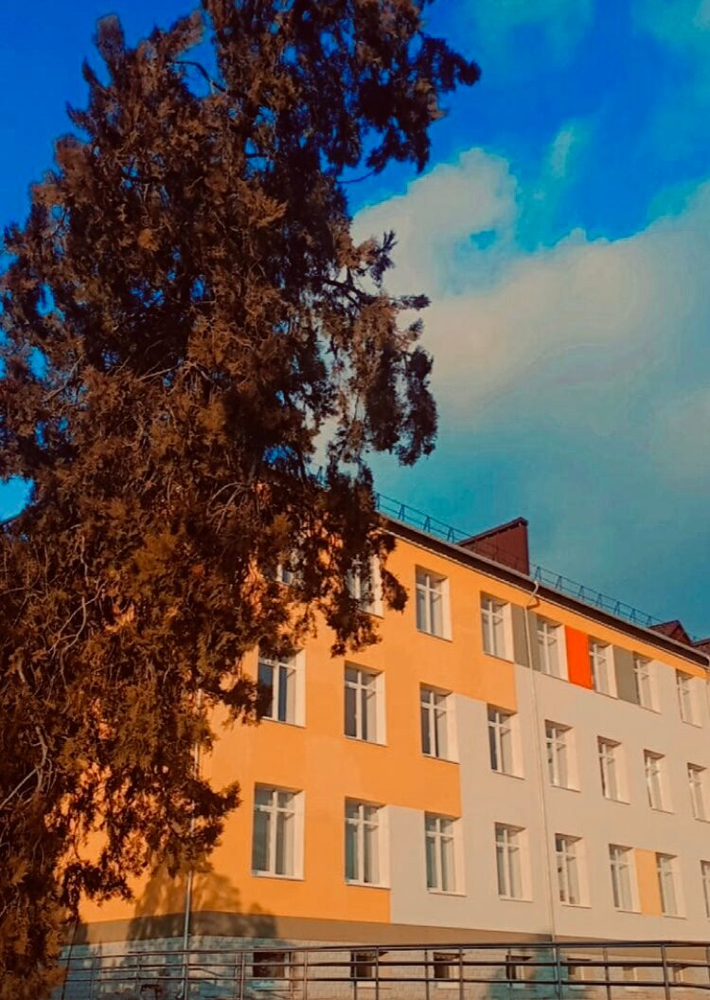

|
Școala din satul Taraclia raionul Căușeni Liceul Teoretic "Ștefan
cel Mare și Sfânt",joacă unul dintre cele mai importante roluri în viața elevilor,le oferă perspective
noi,le pune bazele cunoașterii despre ei și despre viață, le oferă interacțiune și jocuri prin care învață
să relaţioneze cu ceilalți, să negocie, să se argumenteze punctul de vedere. Cu siguranță școala
reprezintă o fereastră spre lume pentru fiecare copil care îi trece pragul.În Liceul Teoretic "Ștefan
cel Mare și Sfânt" își fac studiile 367 de elevi.
|

|
|